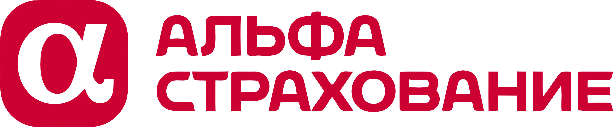
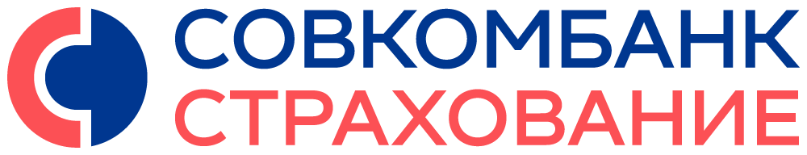
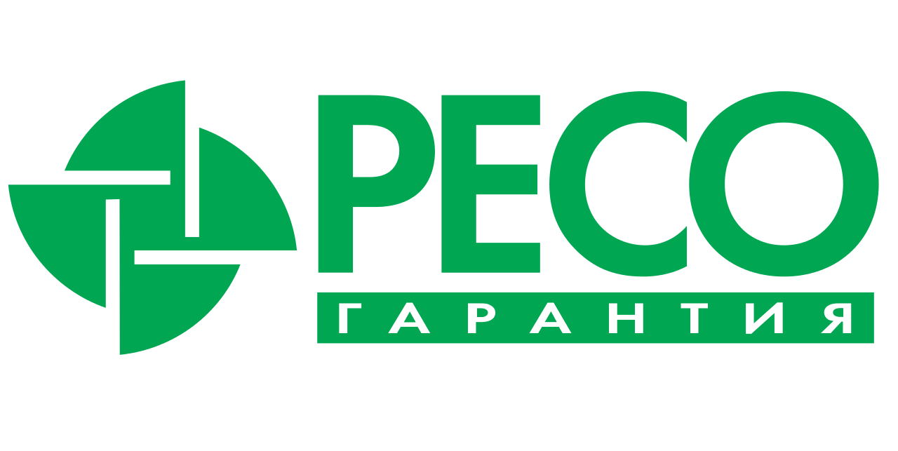
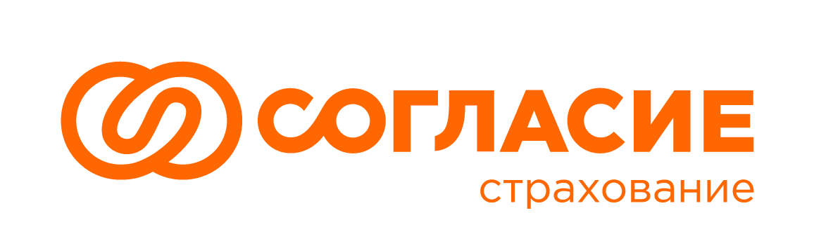
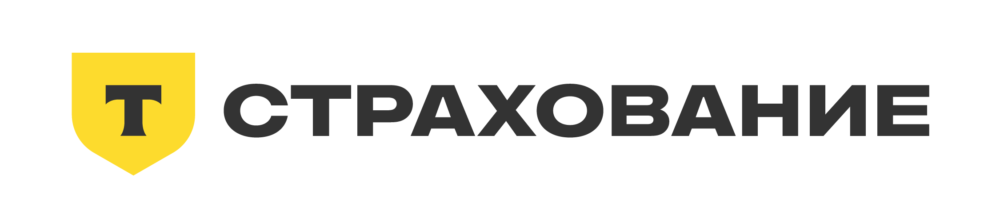

Бизнесу
Соцпакет, за которым стоит забота
Дополнительный аргумент при найме и удержании команды. Программа с понятным составом услуг и бюджетом до заключения договора.
ДМС для юридических лиц
Они двигают бизнес вперёд.
Давайте позаботимся об их здоровье.
Подберём ДМС под вашу команду, сравним предложения страховых и будем рядом весь срок полиса.
Подбор и сопровождение — бесплатно
Когда сотрудники чувствуют заботу,
у компании появляется ещё один
сильный аргумент быть вместе.
Бизнесу
Дополнительный аргумент при найме и удержании команды. Программа с понятным составом услуг и бюджетом до заключения договора.
HR и руководителям
Один менеджер для подбора, подключения и продления. Поможем с изменениями списка сотрудников и вопросами к страховой.
Сотрудникам
Приёмы врачей, анализы и диагностика в выбранных клиниках. Понятный порядок записи и оплата услуг страховой в рамках полиса.
от расходов на оплату труда —
совокупный лимит учёта расходов
при расчёте налога на прибыль
Взносы по ДМС работников можно учесть в расходах при соблюдении условий пункта 16 статьи 255 НК РФ: лицензия страховщика, договор не менее чем на год и оплата медицинских расходов работников. Участие работодателя в ДМС предусматривают в трудовом или коллективном договоре.
Лимит 6% общий для взносов по ДМС, предусмотренных НК РФ договоров на медицинские услуги и расходов из пункта 24.2 статьи 255. Это лимит учитываемых расходов, а не размер экономии на налоге.
Взносы работодателя по ДМС освобождаются от страховых взносов при соблюдении условий подпункта 5 пункта 1 статьи 422 НК РФ. Важен срок страхования каждого работника: при прекращении до года или включении на меньший срок освобождение может не применяться.
Учёт зависит от налогового режима и условий договора. Статья 255 НК РФ · Статья 422 НК РФ · Разъяснение ФНС
Выбираем услуги и клиники под вашу команду.
Условия, лимиты и исключения
проверяем до оформления.
Приёмы терапевта и профильных врачей, лечение и процедуры по назначению. Подберём клиники рядом с работой или домом и уточним порядок записи.
Состав помощи определяется выбранной программой ДМС.Стоимость зависит от команды, городов и уровня клиник. Начнём с того, что важно именно вам.
Мы — страховое агентство «Прогресс».
Помогаем найти подходящее ДМС и разобраться с вопросами к страховой в течение срока полиса.
Вы оплачиваете только полис.
Соберём варианты подходящих страховщиков. Вам не придётся повторять задачу каждой компании.
Разберём цену, клиники, услуги и ограничения. Покажем отличия, которые легко пропустить.
Поможем с изменениями договора, продлением и спорными ситуациями. В ваших интересах.
Уточним задачи, поможем сравнить
предложения и подключить
сотрудников.
Уточняем команду, города, задачи и бюджет.
Запрашиваем предложения подходящих страховых.
Разбираем стоимость, клиники, покрытие и ограничения.
Согласовываем программу и условия договора.
Помогаем оформить полис и передать инструкции команде.
И остаёмся рядом весь срок действия полиса.
С 2014 года помогаем людям и бизнесу выбирать страхование. Эти цифры — история агентства по всем направлениям.









Да, если страховщик допускает выбранный состав группы. Например, можно запросить программу для определенного подразделения или категории работников. Перед оформлением уточняют минимальную численность группы и закрепляют понятные условия предоставления льготы.
Да, при наличии такой процедуры в договоре. Страховщик уточнит, какие сведения передать, с какой даты начнется обслуживание и потребуется ли доплата за оставшийся срок.
Обычно да, в порядке, предусмотренном договором. Работодатель уведомляет страховщика об изменении списка и уточняет дату прекращения обслуживания и правила возможного перерасчета.
Покрытие прекращается в дату окончания договора, если страхование не продлили. Чтобы сотрудники не остались без доступа к программе между периодами, новый срок обслуживания лучше согласовать заранее.
Да, если стороны согласуют продление или заключение нового договора. Перед этим проверяют обновленный список сотрудников, доступность клиник, состав услуг и новый расчет стоимости.
Сначала запросите у сервисной службы страховщика конкретную причину отказа: услуга может отсутствовать в программе, требовать направления или предварительного согласования. Сохраните ответ, медицинское назначение и связанные документы. Если договор оформлен через «Прогресс Страхование», менеджер поможет разобраться в условиях и порядке дальнейшего обращения.
Иногда да, если страховщик согласует изменения. Расширение услуг, изменение перечня клиник или подключение новой группы сотрудников может потребовать дополнительного соглашения и перерасчета стоимости.
Руководитель или уполномоченный представитель работодателя — например, сотрудник HR-службы. Порядок подтверждения полномочий и обмена сведениями согласовывают при оформлении договора.
Расскажите о своей команде.
Мы предложим, как о ней позаботиться.
Работодатель сравнивает два предложения ДМС: в первом есть клиники рядом с офисом, но стоматология не включена; во втором стоматология есть, зато для некоторых обследований нужно предварительное согласование. Даже при близкой стоимости сотрудники получат разный объем помощи. Поэтому перед оформлением проверяют перечень услуг, адреса клиник и ограничения программы.
При подборе ДМС для юридических лиц в Москве учитывают численность команды, районы обслуживания, необходимые услуги и бюджет. «Прогресс Страхование» помогает получить предложения нескольких страховщиков, сопоставить условия и оформить корпоративный договор.
Добровольное медицинское страхование для юридических лиц — это договор, по которому работодатель оплачивает страховую программу для сотрудников. Страховщик организует медицинскую помощь в объеме, указанном в договоре: приемы врачей, диагностику, лечение и другие согласованные услуги.
Страхование ДМС для юридических лиц оформляется по корпоративному договору: работодатель выступает страхователем, сотрудники — застрахованными лицами. Запись к врачу может проходить напрямую через клинику или через сервисную службу страховщика. Для отдельных обследований и госпитализации иногда нужны направление врача и предварительное согласование — этот порядок указан в программе.
В договоре проверяют список сотрудников, дату начала обслуживания, перечень медицинских услуг и сеть клиник. Например, больница может входить в сеть страховщика, но плановая госпитализация по выбранному пакету будет недоступна. Для нее нужен отдельный раздел покрытия.
Условия могут различаться для групп персонала. Организация вправе запросить несколько уровней программ, а возможность их объединения в одном договоре нужно согласовать со страховой компанией.
ДМС для организаций включают в социальный пакет, когда хотят предложить сотрудникам доступные клиники и понятный порядок обращения за медицинской помощью.
При запуске ДМС сотрудникам передают список доступных клиник, контакты сервисной службы и инструкцию по записи. В ней отдельно указывают, какие обследования требуют согласования и что делать, если клиника не может принять по полису.
Медицинская страховка для юридических лиц может состоять из базовой амбулаторной помощи и дополнительных разделов. Для каждого вида помощи нужно уточнить, какие услуги включены, где их оказывают и требуется ли согласование.
Страховка ДМС для юридических лиц может включать раздел «Стоматология», но перечень услуг внутри него отличается. В одной программе предусмотрено лечение кариеса, в другой — также удаление зубов и некоторые хирургические процедуры. Поэтому при сравнении смотрят расшифровку раздела в приложении к договору.
Отдельно проверьте порядок согласования сложной диагностики: кто оформляет направление, куда обращаться сотруднику и какие документы запрашивает страховщик. Если в ближайшей клинике нужного исследования нет, важно заранее знать, как согласуется обращение в другое учреждение.
Перед запросом предложений полезно разделить сотрудников по городам, подразделениям и режиму работы. Для офиса в центре Москвы и сменного персонала на удаленной площадке удобная сеть клиник может оказаться разной.
Например, в предложении указаны десятки клиник по Москве, но большинство сотрудников работает в одном районе. Вместо общей численности медицинской сети лучше проверить ближайшие адреса, часы приема и наличие нужных специалистов.
Если часть сотрудников работает удаленно, заранее уточните, какие клиники доступны по месту их проживания и можно ли обслуживаться вне города работодателя. Для разъездного персонала важны условия помощи в командировках.
Стоимость полиса ДМС для юридических лиц страховщик рассчитывает под конкретную группу сотрудников и набор медицинских услуг. Итоговую сумму обычно определяют после получения исходных данных; универсального тарифа для всех организаций нет.
Если у страховщика есть калькулятор ДМС для юридических лиц, указанная в нем цена обычно предварительная. Для расчета под компанию потребуются численность группы, города обслуживания, желаемые клиники, состав услуг и бюджет. Эти сведения можно передать в «Прогресс Страхование»: агентство запросит подходящие предложения и поможет сравнить их по наполнению.
Если расчет представлен в виде цены на одного сотрудника, отдельно уточните стоимость дополнительных опций, порядок доплаты за новых работников и условия перерасчета при увольнении. Эти параметры влияют на расходы компании в течение года.
Для оформления работодатель передает параметры программы и согласует условия со страховщиком. «Прогресс Страхование» помогает пройти подбор и оформление по следующей схеме.
Если компания продлевает существующее ДМС, полезно до расчета собрать обращения сотрудников по недоступным клиникам, сложной записи и отказам в согласовании. Эти вопросы стоит включить в запрос при продлении или смене страховщика.
Для оформления корпоративного договора обычно нужны реквизиты организации, сведения об уполномоченном представителе и список работников для подключения. Формат и состав данных определяет страховщик. Передавать персональные сведения следует через согласованный безопасный канал и с соблюдением правил обработки персональных данных.
При расчете налога на прибыль взносы по договорам ДМС работников сроком не менее года могут учитываться в расходах на оплату труда. Пункт 16 статьи 255 НК РФ устанавливает совокупный предел 6% расходов на оплату труда для предусмотренных им медицинских расходов. Для отдельных налоговых режимов правила учета будут другими.
По подпункту 5 пункта 1 статьи 422 НК РФ страховые платежи работодателя по соответствующим договорам ДМС, заключенным на срок не менее года, не облагаются страховыми взносами при соблюдении условий нормы.
Бухгалтерии стоит проверить срок договора, документальное основание предоставления ДМС работникам, порядок учета взносов и последствия изменений в списках застрахованных. Порядок учета зависит от системы налогообложения компании и условий договора.
HR-отделу сложно сравнивать корпоративные программы, если один страховщик прислал общую цену со стоматологией, другой — стоимость только поликлинического обслуживания, а третий включил в расчет стационар. «Прогресс Страхование» помогает привести такие предложения к сопоставимому виду: разделить основные и дополнительные услуги, уточнить ограничения и сеть клиник.
Когда организация выбирает страховую компанию для ДМС юридических лиц, нужно проверить условия обслуживания: где принимают сотрудников, как согласуют диагностику и какие ограничения установлены для стационара. За исполнение договора отвечает страховщик. «Прогресс Страхование» помогает сопоставить эти параметры до оформления полиса.
«Прогресс Страхование» сравнивает доступные предложения среди топ-25 страховщиков. Не каждый запрос направляют во все компании: состав подбора зависит от численности коллектива, географии и необходимых услуг. Менеджер пояснит, чем различаются подходящие варианты, включая ограничения, которые не видны по одной цене.
После оформления агентство сопровождает своих клиентов в течение срока договора. Если возникают вопросы по условиям полиса или порядку обращения за медицинской помощью, менеджер поможет сориентироваться и связаться со страховщиком.
Оставьте заявку, укажите численность команды, города обслуживания, желаемые услуги и ориентировочный бюджет. Агентство подготовит предложения для сравнения и поможет оформить выбранную программу.